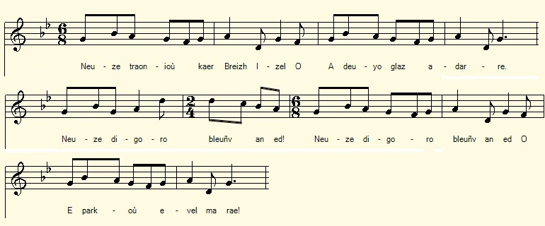
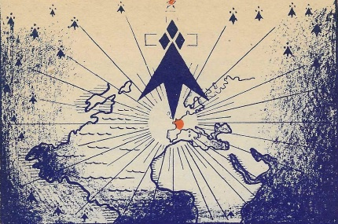

Chouanted
Hymne des Chouans
Chouan Anthem
Chant tiré du 2ème Carnet de collecte de La Villemarqué (p. 107/56).
Mélodie
"Hag en eutru a gorn ar pont"
Arrangement Christian Souchon (c) 2017
|
A propos de la mélodie Inconnue. Le chant "Fidèle jusqu'à la mort" recueilli à Melrand et publié par l'Abbé François Cadic en juin-juillet 1924 dans sa "Paroisse Bretonne de Paris" présente un intéressant changement de rythme à la 6ème mesure qui peut rendre compte des vers inégaux (8 et 7 syllabes alternées) dont se composent les quatrains du présent poème. A propos du texte La Villemarqué a utilisé ce texte, conjointement à celui de "Louis XVI" qui lui a fourni les strophes 19 à 26, pour composer le chant du Barzhaz, "Les Bleus". Les strophes 5 à 9, puis 1 et 2 du présent hymne ont été mises à contribution pour les strophes 33 à 44 du long poème qu'il présente dans son introduction comme l'oeuvre de Guillaume Le Guern de Kerbleizec en Gourin (1774-1812), alias "Sans-souci", frère en Chouannerie de Guillaume Carré dit Bonaventure, comme il ressort du chant "Bonaventure et Sans-souci". Par ailleurs la formule "buhez evit buhez" (Leur vie contre la nôtre) se retrouve dans le chant Les gendarmes de Châteauneuf et dans un récit se rapportant audit Bonaventure (p. 30 des Commentaires de Louis Joudren). On peut donc raisonnablement supposer que Sans-souci, l'ancien "cloarec" devenu Chouan est l'auteur de notre hymne où abondent les références religieuses, ainsi que de la plupart des strophes des "Bleus" du Barzhaz, quelques autres, sans doute, étant sorties de l'imagination du collecteur. |
About the tune Unknown. The song "Faithful to the death" collected at Melrand and published by the Rev. François Cadic in June-July 1924 in his "Parish Breton of Paris" presents an interesting change of rhythm in the 6th measure that can account for the unequal lines (8 and 7 alternating syllables) of which are composed the quatrains of the present poem. About the lyrics The Villemarqué used this text, together with that of "Louis XVI" which provided him the stanzas 19 to 26, to compose the Barzhaz song, "Les Bleus" . Stanzas 5 to 9, then 1 and 2 of the present anthem were put to contribution for stanzas 33 to 44 of the long poem which La Villemarqué presents in his introduction as the work of Guillaume Le Guern of Kerbleizec near Gourin (1774-1812), aka "Sans-souci ", brother in Chouannerie to Guillaume Carré alias Bonaventure, as it appears from the song "Bonaventure and Sans-souci". Moreover, the phrase "Buhez evit buhez" (Their life against ours) is found in the song "The Gendarmes of Châteauneuf" and in a story related to this Bonaventure (p.30 of "Comments" by Louis Joudren). We can therefore reasonably assume that the former "cloarec" wo became Chouan fighter "Sans-souci" could be the author of the anthem at hand where religious references abound, as well as of most stanzas of the "Bluecoats" in the Barzhaz, a few others having probably come out of the imagination of the collector. |
|
BREZHONEG (Stumm KLT) P. 107/56 Chouanted 1. Neuze traoñioù kaer Breizh Izel, a teuio glaz adarre. Neuze digoro bleuñv an ed er parkoù evel ma rae, 2. Neuze, kroaz Jezuz, hor Salver a savo splann war an nec‘h. Neuze kroaz hor Salver Trec’hour ' zavo splann e penn an nec’h. 3. Neuze kroaz hor salver Trec’hour a vo splann war ar bed kaer. Lili gwenn [1], a-us e dreid ha druz gante gwad ar Vretoned. 4. Buhez evit buhez, paotred, lazhañ pe bezañ lazhet! Buhez evit buhez, paotred, lazhañ pe bezañ lazhet! 5. Roomp d’ar groaz tan da evañ, tan da evañ, Bretoned! Roomp d’ar groaz, poultr da zebriñ, Tan da evañ, Bretoned! 6. Tavit, ma mamm, tavit ma zad, ne vin ket maes deus ar vro! Neket a yelo da zoudard, d’ar brezel e pell broioù. 7. Mard’eo red d’in mont d’an emgann, emgann a rin vit va bro. Emgann a rin deuz ar Re c’hlaz (Ar baotred Glaz) , deuz an dud fall, tro war dro. 8. N‘euz ket aon deuz ar bolodoù, ne lazhin ket ma ene: Pa gouezho ma c’horf d’an douar, va ene savo d’an neñv. 9. Deomp araok paotred Breizh Izel! tannañ a ra va c’halon. Kreskiñ a ra va nerzh em c’hreiz: bevet ar relijion! 10. Deuit ganeomp, tudjentiled, gwad uhellañ deus ar vro! [2] Ha Doue a vezo meulet gant kement Kristen a zo! 11. Buhez evid buhez, paotred, lazhañ pe bezañ lazhet! Poultr da zebriñ d’ar vourc’hizien, [3] tan da evañ, mignoned! [4] KLT gant Christian Souchon |
FRANCAIS P. 107/56 Hymne des Chouans 1. Lors les vallées de Bretagne, Se mettront à reverdir, Et le blé dans nos campagnes Bientôt on verra blondir! 2. Lors se dressera splendide, La croix de Jésus Sauveur Dans le ciel, impavide, Croix du Sauveur, du Vainqueur - 3. Croix Illuminant le monde! Croix du Sauveur, du Vainqueur! Le sang des Bretons féconde Ces Lis blancs. [1] Vois leur vigueur! - 4. Qu’on tue ou bien qu’on périsse! Leur vie ou la nôtre, amis! Qu’on tue ou bien qu’on périsse! Leur vie ou la nôtre, amis! 5. Bretons, tendez le calice! La croix s’abreuve de feu! Que la poudre la nourrisse! Elle a faim, soldats de Dieu! 6. Je resterai dans nos plaines! Ne pleurez point, mes parents! Jamais aux terres lointaines Ne combattrai dans leurs rangs 7. Ce sera pour toi, Bretagne, Si je m'en vais au combat! Contre les Bleus et leur hargne. Ton rempart ce sera moi! 8. Moi dont l'âme est hors d’atteinte De leurs balles, de la peur. Au ciel monte l’âme sainte. Quand au sol tombe mon corps 9. En avant, Basse Bretagne! Je sens mon cœur s'embraser. Puisque ma foi m’accompagne, Mes forces vont décupler. 10. Rejoignez-nous, gentilshommes, [2] Du pays le meilleur sang! Tous les croyants que nous sommes Honorons le Dieu vivant! 11. C'est, contre les leurs, nos vies, Tuer contre être tués par eux. Gavons donc la bourgeoisie![3] De poudre, enivrés de feu! [4] Traduction Christian Souchon (c) 2019 |
ENGLISH Page 107/56 Chouan anthem 1. Then in Low Brittany fairly, The vales will be green again Then will thrive our wheat and barley, As they did in the kings' reign! 2. Up to the sky will, most splendid, Our Saviour Lord Jesus' Cross Stand by no one superseded Our Lord's cross, victorious! - 3. O, it will light the world brightly, Our victorious Saviour's Cross A sturdy, gorgeous white Lily [1] Fertilized by Breton blood. 4. Kill them or by them be killed! It's their life against your life Kill them or by them be killed! It's their life against your life 5. O Bretons, let us drink fire! Let the Cross with fire be drenched! The Cross be fed with gunpowder! But our thirst with fire be quenched! 6. Be quiet, my sire and my mother, Our country I shall not leave! We'll not part from one another That's a thing they won't achieve! 7. It's to defend my own country, To battle if I'm to go, Against the Bluecoats most surely Who are the worst folks I know 8. I don't fear their bullets. They are Not able to kill my soul. My soul to Heaven up would rise, Although my body should fall, 9. My heart a bright fire catches! Brittany's men, come along! All my fears are burnt to ashes! May our Religion live long! 10. In your veins, all o'er the country, [2] Noblemen, runs the best blood But of whomever they may be, Christians' praises mount to God! 11. Our motto: "Life against life", men, Which means "Kill them or be killed!" Gunpowder feed the town dwellers! [3] Our hearts with fire be filled! [4] Translation Christian Souchon (c) 2019 |
NOTE
|
[1] Lili gwenn: Le lis blanc est aussi le symbole de la royauté. [2] Tudjentiled: La noblesse est rarement évoquée dans ces chants de Chouans en langue bretonne. [3] Ar vourc'hizien (les "bourgeois"). Dans les années 1780-1790 le terme "bourgeois" désigne les habitants des villes par opposition au peuple des campagnes. (Cf. Gwerz de Pontcalleck"). [4] Tan da evañ: L'expression "ivre de feu" était très goûtée des compositeurs de chants patriotiques et mystiques en cette fin de XVIIIème siècle. En est témoin Schiller, dans son "Ode à la Joie" de 1785: "Wir betreten feuertrunken, Himmlische, Dein Heiligtum..." (Nous pénétrons ivres de feu, Joie céleste, dans Ton sanctuaire...) La Muse bretonne complète l'image par celle de la poudre avec un double symbolisme. C'est une nourriture destinée à la fois à la Croix que l'on défend (str. 4), et aux "bourgeois" que l'on combat (str. 10). (Dans les langues germaniques "Gift" signifie à la fois "cadeau" et "poison"!) |
[1] Lili Gwenn: The white lily is also the symbol of royalty. [2] Tudjentiled: The nobility is rarely mentioned in the Chouan songs in Breton language. [3] Ar vourc'hizien (the "bourgeois"). In the years 1780-1790 the term "bourgeois" refers to the inhabitants of the cities as opposed to the people of the countryside. (See Gwerz of Pontcalleck"). [4] Tan da evañ: The expression "drunk with fire" was very popular with composers of patriotic and mystical songs at the end of the 18th century. Witness Schiller, in his "Ode to Joy" of 1785: "Wir betreten feuertrunken, Himmlische, Dein Heiligtum ..." (We enter intoxicated with fire, Heavenly joy, Your sanctuary ...) The Breton Muse completes the image by that of the powder with a double symbolism. It is a food for both the Cross that is defended (str.4) and the "bourgeois" that we fight (Str 10). (In the Germanic languages ??"Gift" means both "gift" and "poison"!) |

La Croix et l'Hermine rayonnant sur le monde
Illustration de P. Péron pour la méthode de Breton "Deskom Brezoneg"
de V. Séité et L. Stéphan, F.C.B. Emgleo-Breiz